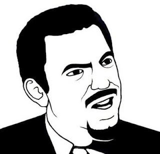

Joli l'index hein ?
$ git status
# On branch master
nothing to commit, working directory clean
Regardons ça de plus près quand même ..
Regardons plus en profondeur tout ça
Il y a 3 parties intéressantes dans un git status :
- Les fichiers non-trackés
- Les fichiers trackés et modifiés
- Les fichiers ajoutés (ou modifiés) explicitement pour la prochaine validation
Sur le rendu d'avant, il n'y a aucun des trois () :
modifions un peu les sources du projet !
Les fichiers non-trackés
Un nouveau fichier est forcément un fichier non tracké!
touch seneque
On obtient :
# On branch master
# Untracked files:
# (use "git add ..." to include in what will be committed)
#
# seneque
nothing added to commit but untracked files present (use "git add" to track)
Les fichiers trackés et modifiés
echo "LOL" >> README.md
On obtient :
# On branch master
# Changes not staged for commit:
# (use "git add ..." to update what will be committed)
# (use "git checkout -- ..." to discard changes in working directory)
#
# modified: README.md
#
# Untracked files:
# (use "git add ..." to include in what will be committed)
#
# seneque
no changes added to commit (use "git add" and/or "git commit -a")
Les nouveaux fichiers trackés (ou modifiés)
touch tralala && git add tralala && git mv MOVEME DONTTOUCH
On obtient :
# On branch master
# Changes to be committed:
# (use "git reset HEAD ..." to unstage)
#
# renamed: MOVEME -> DONTTOUCH
# new file: tralala
#
# Changes not staged for commit:
# (use "git add ..." to update what will be committed)
# (use "git checkout -- ..." to discard changes in working directory)
#
# modified: README.md
#
# Untracked files:
# (use "git add ..." to include in what will be committed)
#
# seneque
Les différences avec la dernière validation
C'est bien beau de voir les fichiers qui ont changé, mais quid de ces modifications ?
git diff
On obtient :
diff --git a/README.md b/README.md
index bc199a5..1f9e612 100644
--- a/README.md
+++ b/README.md
@@ -1,4 +1,5 @@
GitTutalSlave
=============
-Slave for git tutorial
\ No newline at end of file
+Slave for git tutorial
+LOL
C'est l'heure du ... RE-RE-RE-RECORD!
Après avoir effectué des changements dans notre code, du style :
- ajouté une fonctionnalité ;
- fixé un bug ;
- corrigé de la typo (LOL) ;
On peut enregistrer nos modifications à l'aide de la commande:
git commit
Les différentes façons d'effectuer notre commit
Un commit est toujours accompagné d'un message.
Voici différentes façons d'effectuer notre commit :
- git commit : Ouvre un éditeur pour écrire le message
- git commit -a : Ajoute tous les fichiers trackés dans le commit, et ouvre un éditeur
- git commit -m "SCUMBAG GICLE" : Commit avec le message "SCUMBAG GICLE"
Quelques protips pour commiter sans soucis
- Vérifiez toujours les fichiers que vous validez (git status et git diff sont vos amis)
- Commitez du code qui fonctionne (sinon vous allez payer des croissants!)
Du coup, validons nos magnifiques changements :
git commit -m "FIX typo (LOL)"
L'historique des commits
Pour consulter l'historique des enregistrements effectuées,
on utilise git log
git log
git log -p # Affiche l'historique avec les diff des fichiers
git log --name-only # Affiche l'historique avec les fichiers concernés
Un zôli schéma:
Annuler des changements : les fichiers
Il existe plusieurs façons d'annuler des changements. Pour un fichier :
Annuler des changements : les commits (1/2)
On peut annuler des changements sur des commits entier :
HEAD^ ...?
SRLY LÀ?

Petit explication du HEAD
Pour faire simple :
- HEAD représente la dernière version valide de vos sources
- HEAD^ représente l'avant dernière version valide
- HEAD^^ représente l'avant-avant dernière version valide
- Un écriture plus compréhensible : HEAD~3, pour remonter 3 commits en arrière.
Hey! C'est encore un zôli schéma
Annuler des changements : les commits (2/2)
- git reset --hard HEAD^ : Supprime le dernier commit, ainsi que les modifications
- git commit --amend : Permet de modifier le dernier commit
Avant de continuer
Faisons un peu de ménache!
git reset --hard HEAD^
Histoire de supprimer le dernier commit .. douteux ;)
La gestion des branches
- Intérêts et explications des branches
- Création des branches
- Manipulation des branches : le merge
Qu'est-ce qu'une branche ?
Un dessin c'est mieux, m'voyez ..
- Une branche permet de développer en parallèle du code.
- La branche principale (ie par défaut) est la master
- Dans git, la gestion des branches est optimisée pour être très rapide!
Oki, cool .. à quoi ça sert ?
Les intérêts sont multiples :)
- A développer de nouvelles fonctionnalités
- A fixer des bugs
- A générer de la documentation
- A effectuer des changements majeurs dans le code
- Et bien plus encore ! (limite, imagination, toussa quoi ..)
Création de branches
Pour créer une branche rien de plus simple :
git branch nom_de_la_branche
Pour lister les branches :
git branch
Pour se déplacer sur une branche :
git checkout nom_de_la_branche
git branch
Pour supprimer une branche :
git branch -d nom_de_la_branche
Manipulation des branches : le merge
Lorsque l'on a fini notre travail sur une branche, on veut la fusionner avec la branche principale.
Ceci est possible grace à un merge
La commande a effectuée depuis une branche b1, pour la merger avec une branche b2 : git merge b2
Un petit schéma ?
Admettons que nous soyons sur la branche master (M), et que l'on veuille merger la branche feature (F):
Avant le merge :
Après le merge :
Gestion des remotes
- Une remote ? Kezako ?
- Mise à jour des sources via les remotes
Une remote ? Kezako ?
De rien :)
SRLY, une remote, c'est quoi ?
- Une remote est un dépôt
- Votre dépôt est donc une remote!
- Le dépôt que vous avez cloné est aussi une remote : il s'agit de la remote origin (GIN)
git remote -v
Mise à jour des sources via les remotes
- git pull : Mise à jour de ses sources locales
- git push : Mise du dépôt origin avec la branche courante
Un petit exemple pratique sur Github
Rendez-vous sur Github !
Inscrivez-vous ou connectez-vous, et crééz un nouveau repo
git remote add github adresse
git push github master
Merci d'avoir écouté :)
Des questions ?


 Linus Torvald, créateur du noyau Linux et de git
Linus Torvald, créateur du noyau Linux et de git